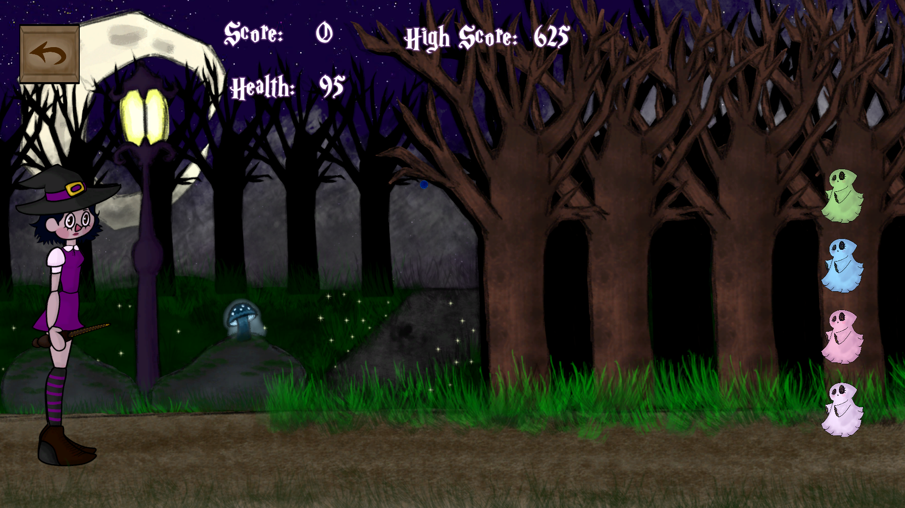

Qamar
About Qamar
Qamar is a colorful 2D side-scrolling shooting game where you play as a witch who fires magical beams at never ending waves of spooky (but cute) ghosts. The goal is simple: shoot down as many ghosts as you can to beat your high score. I made Qamar as my first portfolio project for school. It was built in Unity and helped me learn a lot about 2D game development, like animating characters, designing enemy behavior, implementing shooting mechanics, creating a scoring and health system, and setting up simple UI elements like game over screens and menus. This project also helped me bring together my love for game design, visual art, and storytelling into something fun and playable.
What I Did
- Designed everything from scratch, the character, ghosts, UI, and background
- Created 2D animations for Qamar the witch
- Created multiple ghost enemies with different colours
- Implemented player controls and shooting mechanics in Unity
- Developed scoring and high score systems
- Programmed health, shield, and respawn systems
- Designed all UI panels (main menu, game over, high scores, etc.)
- Handled enemy attack patterns and projectile logic
- Created all custom visual assets (except fonts/music)
- Managed code organization mainly within one CharacterControl script
Screenshots
Development Notes
I developed Qamar using Unity and created all the art in Krita. My focus was on making it simple yet fun, something that feels like the 2D online games I used to play as a kid. Since it was my first project, I took my time with it and really enjoyed the process. I learned a lot along the way, like how to set up gameplay systems, and bring my characters and world to life.